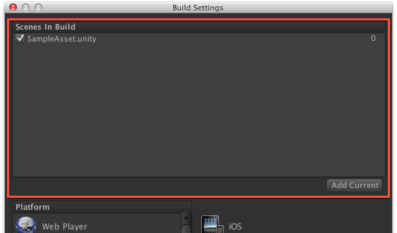

fig.B
fig.BUnityを自動的にビルドする設定にしたときのメモ
概要
自前のプラグインというかAssetStoreで売るんだぜ的ツールのテストがしたいんだぜ。
iOS向けアプリケーションのビルドなので、 環境は必然的にMac。
Unity.app内のshell
/Applications/Unity/Unity.app/Contents/MacOS/Unity
に対して、特定のコマンドを実行することで、バッチの実行が出来る。
あっちなみに Unity Pro 限定です。
チャレンジしたこと
JenkinsでUnityのiOSビルド出力を行う
DeviceとSimulator両方出す
成果物：デバイスとシミュレータのビルドを連続で行うサンプル
https://gist.github.com/sassembla/5194684
参考死霊
本当に情報が少ないんですけど、、！！
コマンドラインでのUnityの起動に関する日本語情報
http://docs-jp.unity3d.com/Documentation/Manual/CommandLineArguments.html
BuildPipeline Ref
http://docs.unity3d.com/Documentation/ScriptReference/BuildPipeline.html
先駆者：アメーバのひと
http://ameblo.jp/principia-ca/entry-11010391965.html
バッチとは
Unityのビルドスクリプトのこと。Unityのプロジェクト中に特定の形式の.csとかを含んでおく事で、Unityの動作を実行できる。
下準備
Assets/どこか/Editor フォルダをつくり、その中にビルド内容を記述した.csファイルを置く。
コマンドラインから起動する予定のコード
BuildBatch.cs
using UnityEngine;
using UnityEditor;
using System.Collections;
public class BuildBatch : MonoBehaviour {
// build iOS app
private static void BuildiOS(){
Debug.Log("/////////// hello build ///////////");
}
}
コマンド
/Applications/Unity/Unity.app/Contents/MacOS/Unity -batchmode -quit -projectPath /Users/sassembla/Desktop/SampleProject -executeMethod BuildBatch.BuildiOS -logFile ~/build.log; cat ~/build.log
-projectPathでプロジェクト指定が可能
Assetsが入っているフォルダ までのパスでOK。
-quit で、ビルド後に「何もする事が無かったらUnityインスタンスを終了させる」ことが可能
Macだと、複数のUnityインスタンスを立ち上げられない(open -n Unity.appとかやっても怒られる)ので、必須オプション。
-executeMethodで、
クラス BuildBatch に書かれた内容が実行される。(-executeMethod BuildBatch.Build)
特に、BuildBatch クラス中のBuildメソッドが実行されます。(-executeMethod BuildBatch.Build)
☆ドキュメント読んでもやってみるまでわからんこと☆
こんなの、あんまり書く人居ないと思うので、死亡録として書いておく。
・Macだと、Unityのインスタンスを複数立ち上げる事は出来ない。 open -n Unity.appとかやっても怒られる２。
ダイアログが出て怒られる。
・複数のUnity、一つのUnityから、一つのプロジェクトを同時に開くことは出来ない
たとえばエディタでプロジェクトAを開いている時、batchmodeでプロジェクトAのbatchを叩こうとすると、怒られる。
ドキュメントだと、「バッチモードでプロジェクトを開くときにエディタも同じプロジェクトを開くことはサポートされていないことに留意してください」とあり、
http://docs-jp.unity3d.com/Documentation/Manual/CommandLineArguments.html
出来るプラットフォームもあるという残念な事象。
Windowsだと複数のUnity.exeが起動できる。 Linuxはわかんないや。
でもWindowsとかじゃiOS用のビルドできないし、、
まあはい。
ここまでで、BuildBatch.csを起動可能。とりあえずバッチ実行できるようになった。
で、ここからが、「ちゃんと望むモノがビルドできるようになる」までの戦いだった。
UnityでiOS向けのビルドを、デバイス/シミュレータともに行う、っつー部分の死霊がまあナイナイ。
特に、Device向けとSimulator向けをどう切り替えたもんか、まとまっている死霊が見当たらなかった。
で、結局判ったので下記に纏める。
完成版についてのGUIとの対応表
gistのコード(同上)に注釈いれつつ備忘録。
最終的に下記のようになった。
using UnityEngine;
using UnityEditor;
using System.Collections;
public class BuildBatch : MonoBehaviour {
// build iOS app
private static void BuildiOS(){
Debug.Log("/////////// build start ///////////");
string [] scene = {
"Assets/SampleAsset.unity"
};
→ .unityシーンを配列で渡す。UnityのGUIでの下記に対応。 なんか検出機構作って自動化すると良いと思う。
fig.A
string dstDevice = "Device";
string dstSimulator = "Simulator";
→ 出力先のフォルダ名を、今回は適当だけど設置した。
BuildOptions opt = BuildOptions.SymlinkLibraries |
BuildOptions.Development |
BuildOptions.ConnectWithProfiler |
BuildOptions.AllowDebugging;
→ built playerで実行する時に使用される設定。
// set cheched
EditorUserBuildSettings.symlinkLibraries = true;
EditorUserBuildSettings.development = true;
→ 下記のGUIに対応。デバッグとかのチェック、入れ忘れて辛い目に、、というのから、自動化で解放される。
fig.B
//set Build-target : Device
PlayerSettings.iOS.sdkVersion = iOSSdkVersion.DeviceSDK;
→ プラットフォーム Device or Simulator のセットを行う。 エディターの次のGUIに対応。
 fig.C
fig.C
個人的に、超驚きのポイントだった。
iOSSdkVersion.DeviceSDKっていうパラメータは確認できてたので、てっきりどこかのsetメソッドの引数で渡すものだとばかり、、、
ここもプロパティだった。 思い込みよくない。
//BUILD for device
string errorMsg_Device = BuildPipeline.BuildPlayer(scene, dstDevice, BuildTarget.iPhone, opt);
→ fig.B のBuildボタンを押したときに行われてる内容
押す > 吐き出し先選択 > OKを選択
の内容をひとつのメソッドに固めてある。
if (string.IsNullOrEmpty(errorMsg_Device)){
Debug.Log("/////////// device build succeeded ///////////");
} else {
Debug.Log("/////////// device build failure ///////////");
Debug.LogError(errorMsg_Device);
}
→ エラーチェック（チェックするだけでSimulatorビルドには進んでほしいのでexitは無し。）
//set Build-target : Simulator
PlayerSettings.iOS.sdkVersion = iOSSdkVersion.SimulatorSDK;
// BUILD for simulator
string errorMsg_Simulator = BuildPipeline.BuildPlayer(scene, dstSimulator, BuildTarget.iPhone, opt);
if (string.IsNullOrEmpty(errorMsg_Simulator)){
Debug.Log("/////////// simulator build succeeded ///////////");
} else {
Debug.Log("/////////// simulator build failure ///////////");
Debug.LogError(errorMsg_Simulator);
}
→ 同Simulator。
}
}
ビルド完了時
無事にDevice、Simulatorフォルダが出現。起動も出来た。ヒャッハー！

注意すべき点
プロパティでなんとかしてる箇所が多いので、順番的に書かざるを得ない、
複数のプラットフォームのものを同時に並列にビルドとかはUnityの制約的に無理。
つまり、Unity.app本体のシングルトン性で保護されて動いている機構だということを忘れてはいけない。
まとめ
Unityよくできてんな。